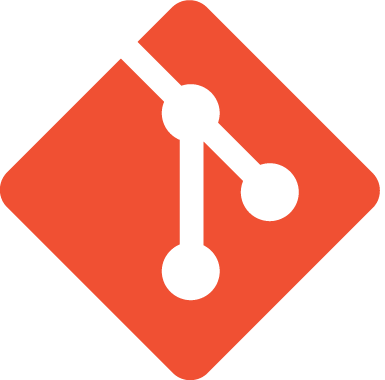

Gestion de
version
et
publication
numérique
Maîtriser des méthodes de gestion de projet appliquées au domaine de la publication numérique ;
Linus Torvalds

Git
∞
versions
∞
contributeurs
Enorme impact sur
l'évolution du web
GitHub
GitHub en 2017
Pas que du code…
Beaucoup de
documentations
techniques, de
guide de style
, etc.
code == texte;
Écriture
Sauvegarde
Relecture
Validation
Publication
Un cycle
continu
GitHub Flow
Getty Publications
Quire offline-test
Un gabarit de publication pour publier un livre au format HTML consultable hors-ligne.
Gestion de version
Décentralisé
Vocabulaire
dépôt
/
repository
commit
/
enregistrement d'un instantané
branche
/
branch
remote
/
dépôt distant
clone
/
fork
pull
/
push
pull request
/
demande de fusion
merge (no-ff)
squash
/
rebase
Liens
Télécharger Git
Aide-mémoire (GitHub)
—
Version PDF
Mémo graphique Git
Gestion sémantique de version
Créer un compte GitHub
Try Git
Les interfaces graphiques
GitKraken
GitBook
Learn Version Control with Git
{kind=link}
 GitHub
GitHub